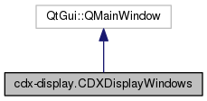

Class to display a Window with a number of plots per link in a CDX file. More...
Inheritance diagram for cdx-display.CDXDisplayWindows:

Collaboration diagram for cdx-display.CDXDisplayWindows:

Public Member Functions | |
| def | __init__ (self, cdx_file_name, enable_pdp, parent=None) |
| def | on_slider_change (self, value) |
| def | on_draw (self) |
| def | on_key_press (self, event) |
Public Attributes | |
| cdx_figures | |
| link_names | |
| nof_cirs | |
| cir_rate | |
| main_frame | |
| vbox | |
| t_label | |
| sld | |
| max_nof_links_to_show | |
| link_layouts | |
Detailed Description
Class to display a Window with a number of plots per link in a CDX file.
A slider can be used to set the time for which the plots are supposed to be displayed.
Data such as the channel impulse response for a specific time, the power and delay spreads over time, as well as the power-delay profile is displayed for each link in a CDX file.
ChannelLink instances are used, one ChannelLink object displays one link of the CDX file.
The documentation for this class was generated from the following file: